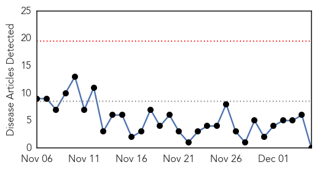
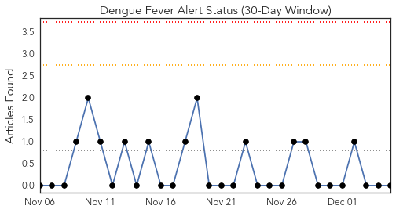
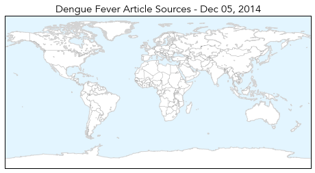
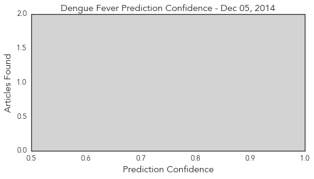
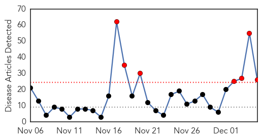
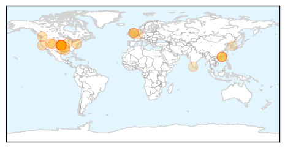
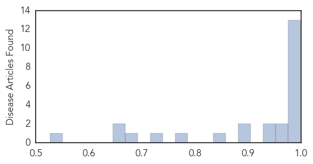

Dengue Fever
30-Day Web Trend
0 alerts, 0 warnings

30-Day Twitter Trend
0 alerts, 0 warnings

Article Locations
Article Confidences
Top Articles:
-
No articles found for Dec 05, 2014
Top Tweets:
-
No tweets found for Dec 05, 2014
Influenza
30-Day Web Trend
7 alerts, 0 warnings

30-Day Twitter Trend
0 alerts, 0 warnings

Article Locations
Article Confidences
Top Articles:
- 1.000
- Flu Shot May Offer Less Protection This Winter
- 0.999
- This Year's Flu Vaccines Half Effective, Says CDC
- 0.999
- Vaccine may not cover as many flu cases
- 0.996
- Flu vaccines are less effective this season
- 0.996
- Why the Flu Vaccine Can't Protect Against Every Flu Strain
- 0.996
- 2014 flu vaccine not as effective — Virus has mutated
- 0.996
- Vaccination Push Continues As Flu Appears In Kansas
- 0.996
- Why the Flu Vaccine Can't Protect Against Every Flu Strain
- 0.995
- CDC says it is too late to make new flu vaccine for this season
- 0.994
- CDC says it is too late to make new flu vaccine for this season
- 0.992
- Local doctors continue to push flu vaccine despite C.D.C alert
- 0.990
- CDC issues flu warning - Story
- 0.979
- Flu shots are less effective this year
- 0.974
- Larimer flu hospitalizations soar; some classes canceled
- 0.973
- Your Flu Shot Might Not Work This Year (But You Should Still Get One)
- 0.947
- Kane residents urged to get flu shots during Vaccinate Illinois Week
- 0.941
- CDC: Drifting flu virus a worry
- 0.899
- Officials identify strain of bird flu in B.C.
- 0.891
- H5N2 virus confirmed on Fraser Valley farms: CFIA
- 0.843
- Highly Contagious Avian Flu Discovered in Netherlands
- 0.776
- Highly pathogenic strain of bird flu virus observed in Canada - Dumb Out
- 0.723
- UPDATE 1-Canada bird flu virus identified as 'highly pathogenic' strain
- 0.674
- Avian Flu Contained in Core Sites in Kerala
- 0.665
- Canada bird flu virus identified as 'highly pathogenic' strain
- 0.647
- Canada bird flu virus identifiedas 'highly pathogenic' strain, Others news, Health News, AsiaOne YourHealth
- 0.527
- Tests confirm H5N2 avian flu at two B.C. farms; two additional farms infected
Top Tweets:
-
No tweets found for Dec 05, 2014